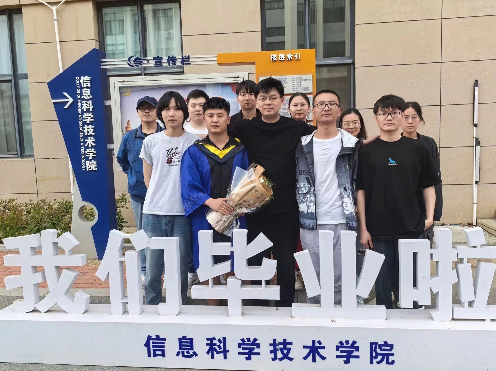

Contributors

|
|
Supervisor: Xin Wang Dr. Xin Wang earned his Ph.D. from China University of Petroleum (China) in 2013. He currently serves as an Associate Professor at the School of Information Science and Technology, Qingdao University of Science and Technology (China). From 2017 to 2020, he held the position of Director at the Qingdao Pore-Scale Imaging Laboratory. Concurrently, he served as a Ph.D. Supervisor at the International Graduate School of the Shandong Academy of Sciences from 2018 to 2020. As a visiting scholar, Dr. Wang conducted research exchanges at Imperial College London (UK), Heriot-Watt University (UK), and the Far Eastern Branch of the Russian Academy of Sciences (Russia). He participated in the Sino-Russian-Japan Joint National Scientific Expedition Team during 2016-2017. His research expertise spans 2D/3D image processing, computer vision, and artificial intelligence. |
|
Co-supervisor: Jingsheng Ma Jingsheng Ma received his BSc degree from Lanzhou University, China, in computational mathematics, MSc degree in computing from Beijing Institute of Computer and Simulation Technology in China, and PhD in Geographical Information System from Sheffield University, UK. He joined the EGIS, Heriot-Watt University, UK, in 1997. His research interests include developing mathematical models and computational techniques for better addressing practical application problems. |

IntelliSense, Big model

Spacial awareness

Unsupervised learning, Self-perception

Medicine AI application

Multi-scale 3D reconstruction

Latent space inversion

Super-resolution

Industrial AI application

Big model

Graduate students of 2024


Visiting students


Newsletter
Cooperation and exchange with Qilu Hospital of Shandong University in April 26, 2025

Congrats!2025Spr graduated

.jpg)
Team activities


.jpg)
.jpg)
Case Study
Latent Control
Introduction: Using ClusterGAN for latent space clustering of samples enables the controlled generation of images with different properties as needed. This method combines mixed one-hot encoded variables and continuous latent variables to sample the latent space and utilizes an inverse network to map data into the latent space.
Quadruped Robot

Publication
2025:
FSTI-GAN
Highlight: Medicine AI application
Title: FSTI-GAN: Fusion of Structural and Textural Information (FSTI) in Generative Adversarial Network (GAN) to Improve Medical Image Inpainting
Introduction: We proposed an improved dual-stream parallel embedding network to improve the quality of image restoration by performing structural reconstruction and texture reconstruction in stages, utilizing FSTI Block to achieve global consistency of structural and texture information, and enhancing the contextual reasoning ability to effectively address the impact of poor structural and texture information on restoration results.
Journal: Pattern Recognition, Chinese Academy of Sciences ranking Q1 (TOP), JCR ranking Q1
Link: paper
UDAFractureSeg
Highlight: Unsupervised learning
Title: Unsupervised Domain Adaptation Based Fracture Segmentation Method for Core CT Images
Introduction: We propose an adaptive core fracture segmentation method based on unsupervised domain adaptation, which combines style migration and collaborative learning to improve the accuracy and robustness of fracture segmentation in CT images of cores from different geological sources.
Journal: Expert Systems With Applications, Chinese Academy of Sciences ranking Q1 (TOP), JCR ranking Q1
Link: paper
FPEM-GAN
Highlight: Big model
Title: Efficient Image Inpainting of Microresistivity Logs: A DDPM-Based Pseudo-Labeling Approach with FPEM-GAN
Introduction: We proposed a deep learning method to efficiently repair missing regions in logging images by means of pseudo-label training, perspective enhancement module and SM-Unet discriminator, which especially improves the reconstruction quality of high-angle cracks and fine-grained texture features while reducing the computational cost.
Journal: COMPUTERS & GEOSCIENCES, Chinese Academy of Sciences ranking Q2, JCR ranking Q1
Link: paper
ADA-PGGAN
Highlight: Latent space inversion
Title: For Any Two Arbitrary Slices from One Digital Rock, Its Twins Can be Fast Stably Reconstructed: A Novel Integrated Model of RVION with ADA-PGGAN
Introduction: We proposed a novel feature distribution learning and adaptive data enhancement framework based on the generative model GAN, which successfully reconstructs high-quality large-scale 3D digital rocks in data-scarce environments and validates its accuracy and consistency by multiple metrics. The code is available for free, but please contact 03774@qust.edu.cn first.
Journal: COMPUTERS & GEOSCIENCES, Chinese Academy of Sciences ranking Q2, JCR ranking Q1
Link: paper
DTSS
Highlight: Spacial awareness
Title: A Novel Workflow of Segmentation for Finer Mineral Distingished: AttentionGAN-Swin-Transformer Fused Network
Introduction: Our proposed DTSS workflow combines AttentionGAN and Swin Transformer to achieve accurate recognition of mineral features in complex rock images through effective domain transformation and image segmentation.
Journal: Marine and Petroleum Geology, Chinese Academy of Sciences ranking Q2 (TOP), JCR ranking Q1
Status: Waiting for submission
CXRClassification
Highlight: Medicine AI application
Title: Multi-label Chest X-ray Image Classification Based on Long-range Dependencies Capture and Label Relationships Learning
Introduction: We proposed a deep learning method combining large kernel convolutional and graph convolutional networks to improve the disease diagnosis accuracy of chest X-ray images through anatomical segmentation and label co-occurrence relations.
Journal: Biomedical Signal Processing and Control, Chinese Academy of Sciences ranking Q2, JCR ranking Q1
Link: paper
Title: Injecting types of mineral clays into an existing digital rock with user designing: An novel kernel algorithm embedding with 3D generative model
Status: submitted
2024:
GeoDeepGenerativePrior
Highlight: IntelliSense
Title: Prior-Guide Adaptive Gan Method for Various Borehole Image Inpainting
Introduction: We proposed a deep learning approach that utilizes generative adversarial networks (GAN) and feature extraction fusion module to enhance the continuity and integrity of logging image restoration and effectively extract cracks, gravel structures and fine-grained texture features, thereby improving the accuracy and robustness of geologic tectonic analysis.
Journal: GEOPHYSICS, Chinese Academy of Sciences ranking Q2 (TOP), JCR ranking Q1
Link: paper
DigitalRockConstruction
Highlight: Multi-scale 3D reconstruction
Title: Integrating Sub-Scale Components Across Existing Scales in 3D Porous Media: A Novel Approach Combining Generative Artificial Intelligence Models
Introduction: We proposed a new generative modeling framework that integrates coarse- and fine-scale information through two networks to effectively model the multiscale structure of porous media and enhance the efficiency and practicality of digital rock reconstruction.
Journal: Environmental Modelling and Software, Chinese Academy of Sciences ranking Q2, JCR ranking Q1
Status: Under Review
FractureSeg3D
Highlight: Connectivity self-perception
Title: Connectivity-Aware 3D Fracture Segmentation Method for Core CT Images
Introduction: We proposed a new fracture segmentation method for 3D core CT images, which utilizes a 3D multilayer Transformer network to capture long-range dependency and spatial continuity features, and combines dynamic weighting and multiscale context-aware fusion to significantly improve the recognition of spatial structural connectivity of fractures.
Journal: Engineering Applications of Artificial Intelligence, Chinese Academy of Sciences ranking Q2 (TOP), JCR ranking Q1
Status: Under Review
SemSR
Highlight: Super-resolution
Title: A Super-resolution Framework with Semantic Guidance for Restoring Pore-Solid Interface Roughness to Enhance the Accuracy of Digital Rock Transport Properties
Introduction: We proposed a super-resolution method based on generative adversarial networks, combining semantic sharing mechanism and fuzzy noise, in order to improve the recovery of pore wall features and overcome the limitations of traditional methods when dealing with low-resolution images, thus improving the generalization ability of the model under complex geological features.
Journal: COMPUTERS & GEOSCIENCES, Chinese Academy of Sciences ranking Q2 (TOP), JCR ranking Q1
Status: Under Review
MLDM
Highlight: Big model
Title: Generation of Porous Micro-structure Based on Diffusion Model
Introduction: We proposed an improved diffusion modeling network that generates rich porous structures while reducing the resolution of diffusion modeling multisamples by performing structural reconstruction and structural generation in stages, taking advantage of the dimensionality reduction capability of the self-encoder and the rich generative capability of diffusion models.
Journal: pending
Status: Manuscript Drafting
SurfaceDefectDetectionYolov8
Highlight: Industrial AI application
Title: Surface defect detection method based on Deep-Learning
Introduction: In the process of small target detection, for the problem of similar defects caused by different generation mechanisms, this paper introduced a mechanism that fuses spatial attention (SA) and coordinate attention (CA). We designed a new aggregation and redistribution network model to solve the problem of small target feature loss. Meanwhile, for the boundary loss problem in small target detection, a new DOS loss function is proposed to ensure the smoothness of the small target position deviation, so as to improve the small target detection effect comprehensively.
Journal: pending
Status: Manuscript Drafting
CLECC
Highlight: Medicine AI application
Title: Application of a course learning strategy based on structural prior and Ebbinghaus forgetting curve for ultrasound gallbladder lesion classification
Introduction: In ultrasound images, traditional deep learning models face challenges in classifying gallbladder lesions due to the high similarity in texture features between gallbladder tissue and surrounding soft tissue. To address this issue, this paper proposes a curriculum learning and training strategy that combines structural priors and Ebbinghaus forgetting curves. Inspired by the development of human visual acuity, we use the Relative Total Variance (RTV) method to extract structural priors from images, replacing traditional Gaussian blur processing, to more effectively separate texture and structural information, guiding the model to focus on key anatomical structural features. At the same time, a course learning strategy was designed based on the Ebbinghaus forgetting curve to optimize the learning process of the model and enhance its ability to remember and discriminate key features. The experimental results show that this method has achieved significant results in improving the accuracy and robustness of gallbladder lesion classification, providing strong support for automatic diagnosis of ultrasound images.
Journal: IEEE Transactions on Medical Imaging, Chinese Academy of Sciences ranking Q1 (TOP), JCR ranking Q1
Status: Waiting for submission
Projects
This category includes industrial application projects related to AI models, focusing on process automation, innovation driven solutions, and customer experience enhancement.AI based municipal design software assisted system
Introduction: This project aims to improve the efficiency and accuracy of municipal design by introducing AI technology on top of existing municipal design software in order to realize intelligent drawing functions in municipal design tasks. The project includes conducting a detailed requirements analysis, introducing applicable AI technologies, researching and training AI models, developing and integrating the software, as well as summarizing the project and accepting the results.
Goals
- Intersection Identification and Intelligent Splitting: Accurately identify key road intersections in the software design drawings through AI technology, and design reasonable and efficient splitting schemes to realize drawing division.
- Batch Replacement of Drawing Frames: Automatically replace drawing frames in batch to simplify manual processing.
- Text input automation: automate the text input process to reduce the time-consuming manual operation.
- Batch printing: realize batch printing of design drawings to further improve work efficiency.
Results


Study on the performance of bone cement implant repair materials in mouse femoral structures
Introduction: This project uses the mouse femur as a model, and systematically studies the degradation of bone cement, new bone growth, and changes in bone tissue structure at different time points (one month and three months) by implanting bone cement of different materials. Through data visualization and multi-parameter analysis, including pore size distribution, coordination number, shape factor, and tortuosity, the dynamic changes of bone cement implants in the in vivo environment and their impact on bone tissue repair are revealed.
Results
The image shows the data visualization changes of the structure of the mouse femur and the bone cement implant at one month (left 1, left 2) and three months (right 1, right 2).


Research on spatial structure reconstruction of 3D core fracture model
cooperating organization: Institute of Finance and Economics, China University of Petroleum
Introduction: This project aims to develop advanced techniques for the reconstruction of three-dimensional rock fracture models based on extracted information from real fracture characteristics. By integrating statistical analysis, numerical simulation, and advanced imaging techniques, we strive to create realistic fracture models that can accurately represent the spatial distribution, aperture variation, and morphological features of natural fractures. The research focuses on several key aspects, including the regeneration of fracture aperture based on Gaussian distribution approximations, the reconstruction of fracture morphology considering real dimensions, orientation, and anisotropy, and the fusion of regenerated fractures to form coherent three-dimensional networks.
Reconstruction results


Chest X-ray Disease Diagnosis and Classification System
Introduction: The detection of chest diseases from chest X-ray images using deep learning methods has been an active research area over the past decade. The diagnosis of chest diseases depends largely on the decision-making of radiologists. In the context of a severe shortage of professional radiologists, it is very important to develop automatic analysis methods for computer-aided diagnosis of chest diseases on chest radiographs. By integrating attention mechanisms into deep learning models, many previous methods have shown significant improvements in automatic disease classification. However, existing methods focus on using small-scale spatial attention and often ignore larger-scale image context information associations. Based on this, the system developed by the research team proposes a large-scale attention-based chest disease classification network that is able to consider larger-scale attention-guided spatial features, has a concise network structure and fewer model parameters. In addition, it captures the detailed features of the region of interest through anatomical segmentation and uses graph convolutional networks (GCNs) to establish potential relationships between different diseases. This system can be used in the field of chest X-ray disease classification as an auxiliary tool for early diagnosis of diseases in clinical practice.
Diagnostic results

Lymphocyte tissue identification and 3D reconstruction
cooperating organization: Ningbo No.2 People's Hospital
Introduction: Conventional CT two-dimensional images have the limitation of insufficient spatial perception when displaying lesion characteristics. The three-dimensional reconstruction imaging technology is based on high-quality cross-sectional scanning images, combined with medical imaging, computer image processing and biomedical engineering and other multi-field technologies, and can observe the lesions from multiple angles as a whole, providing an important basis for disease diagnosis and preoperative planning. Through three-dimensional reconstruction, doctors can move, rotate, and make transparent the three-dimensional model before surgery, intuitively understand the location of the lesion and its spatial relationship with the surrounding tissues, and combine virtual reality technology to simulate surgery, optimize surgical plans, reduce surgical risks, and improve surgical accuracy and success rate. In simulated surgery, artificial intelligence technology is used to segment the lesion tissue from the two-dimensional slices, and then accurately locate it through three-dimensional reconstruction technology, clearly display the relative position of the lesion tissue and bones or normal organs, and provide scientific support for surgical planning. We first use artificial intelligence technology to segment the lesion tissue from the two-dimensional slice information, and then reconstruct the lesion tissue through three-dimensional reconstruction technology, and accurately locate it to the original position, so that the relative position between the lesion tissue and bones or normal organs can be clearly displayed.
Reconstruction result

Gallbladder ultrasound image classification
Collaborating organization: Qilu Hospital of Shandong University
Introduction: AI has made great progress in the field of medical image analysis, providing new possibilities for the automated diagnosis of gallbladder cancer. Deep learning methods, especially those based on convolutional neural networks (CNNs), have shown excellent performance in gallbladder cancer detection, and can automatically extract complex features in medical images and identify subtle lesion patterns, thereby improving the accuracy of diagnosis. Researchers have proposed a variety of deep learning-based gallbladder cancer detection methods, such as the region selection network combined with a multi-scale second-order pooling classifier (MS-SoP), the application of Mask R-CNN in gallstone detection, and a gallbladder detection method combining YOLO and Faster R-CNN. These methods have made positive progress in optimizing detection boundaries and improving classification accuracy. However, current research still faces many challenges, including the scarcity of datasets, the problem of co-optimization of target detection and classification networks, and the impact of low quality and noise interference of ultrasound images on the model. To address these issues, the research team collected and annotated a dataset of 368 ultrasound images to make up for the lack of data. In addition, the team conducted a systematic comparative analysis of existing target detection methods and proposed a structure-aware curriculum learning strategy, which combines relative total variation and label smoothing techniques to gradually train the model from simple structures to complex textures, making it more focused on key structural features and improving the robustness and generalization ability of gallbladder cancer detection.
Diagnosis result


{kind=link}
{kind=link}
{kind=link}
{kind=link}
{kind=link}
{kind=link}